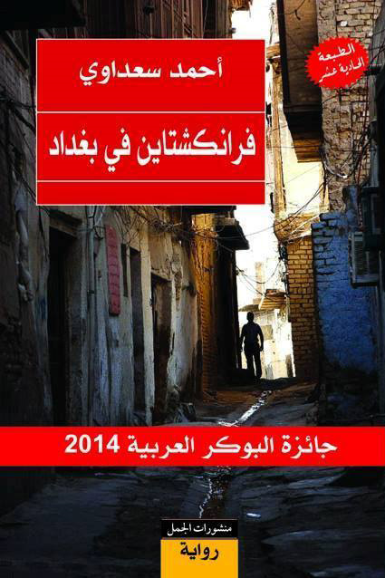
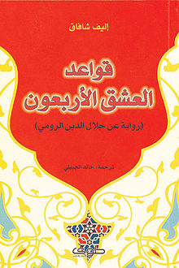
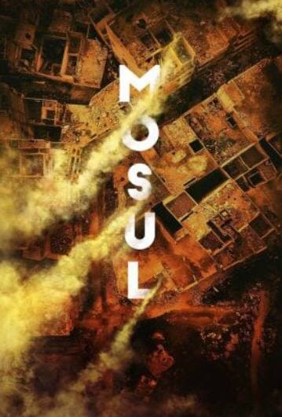

books :
One of my favorite hobbies is reading books. I love reading books very much and
I spend hours reading books. Most times I read books are during the summer vacation
and I read all kinds of religious, political and literary books,
One of the books I love most is the novel by Franckstein in Baghdad,
the novel Alone The Pomegranate Tree, and The Forty Rules of Love .


documentaries :
One of my hobbies is also watching documentary films. I really like this type of film.
It is interesting and useful. You get to know more information than it is. I watch all
kinds of political documentaries, about space and about animals, and the type I love most
is animal documentaries.

Movies and series :
I like to watch special movies and series. I like war series that talk about royal
families. I like to watch old films, especially Audrey Hepburn and Marilyn Monroe movies.